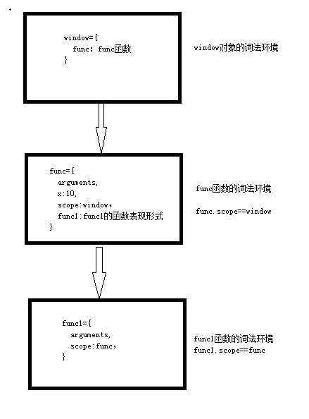

1. 前言
这节讨论js的作用域链，这对后面闭包的章节很有帮助，只有理解了作用域链，才能理解闭包。
在正式开始介绍作用域链之前，需要先了解几点。
js中没有块级作用域。
<script> alert(i);//undefined for (var i = 0; i < 10; i++) { } alert(i);//10 </script>
这段代码相当于：
<script>
alert(i);//undefined
var i;
for (i = 0; i < 10; i++) {
}
alert(i);//10
</script>
2. 作用域链
通过下面的代码示例进行分析来理解js中的作用域链。
<script>
function func()
{
var x = 10;
function func1()
{
alert(x);//10
}
func1();
}
func();
</script>
分析：
首先进行全局预处理
window={ func：func的函数字符串表现形式 }调用func函数，进行函数预处理。
func={ arguments, x:undefined, scope:window， func1:func1的函数表现形式 }
以函数的形式调用(不是new对象的方式)都会创建一个隐式的（看不见的）scope对象，它执行它父集的词法环境，这里就是指向window对象。func的scope等于window对象的词法环境
执行func函数中的 var x=10，此时func的词法环境是
func={ arguments, x:10, scope:window， func1:func1的函数表现形式 }调用func1(),将执行func1的函数预处理。
func1={ arguments, scope:func， }
注意这里的scope指向父集，即func的词法环境
- 执行alert(x),当func1的词法环境中没有x变量，它将到func1的scope中寻找，还是没有那么在往上寻找。
上面的例子中最终构成的作用域链如下图：

3. 封装
作用域链的好处，就是为了封装一些数据。比如，我们写了一个插件，为了不和其它js产生冲突，往往需要封装到自己的作用域链中，那么具体怎么封装呢？
<script>
(function () {
var x = 10;
function func()
{
alert("func"+x);
}
function func2() {
alert("func2" + x);
}
//给window对象添加一个属性，设置为func函数
window.func = func;
})();
//外层只能调用func，不能访问x和func2
func();
</script>
4. 总结
- 需要知道js没有块级作用域
- 理解scope已经作用域链
- 学会封装